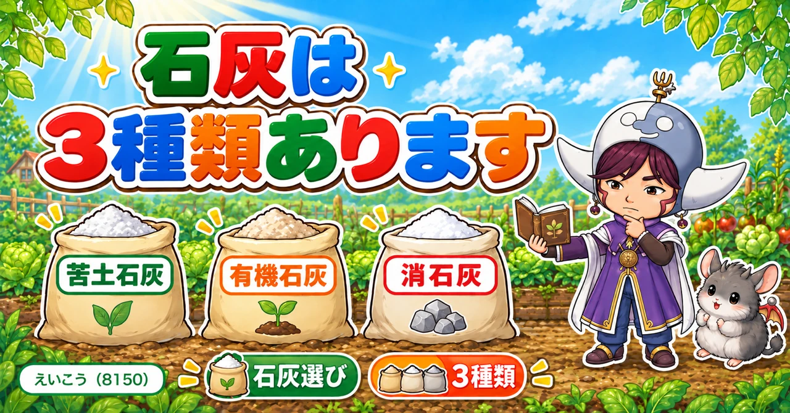
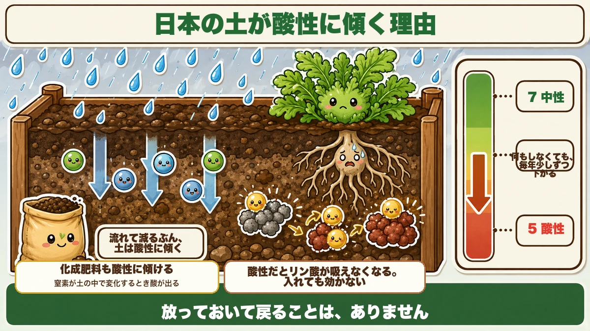
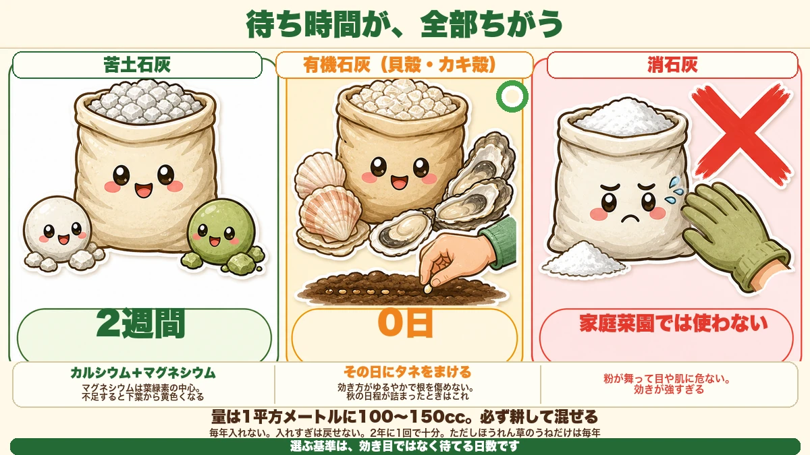
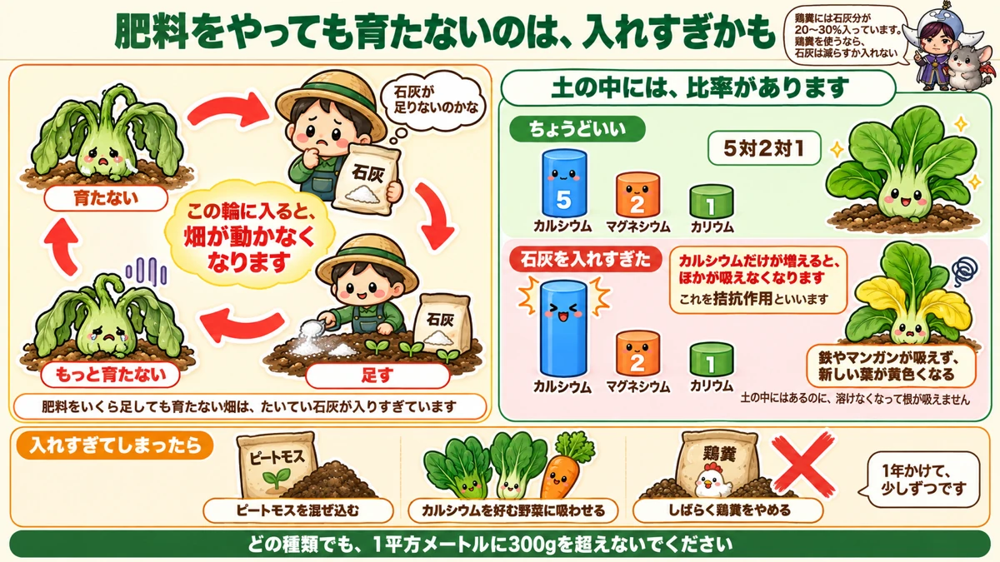
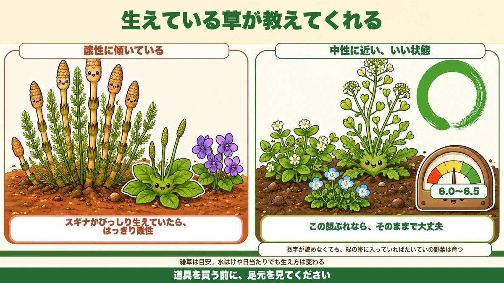
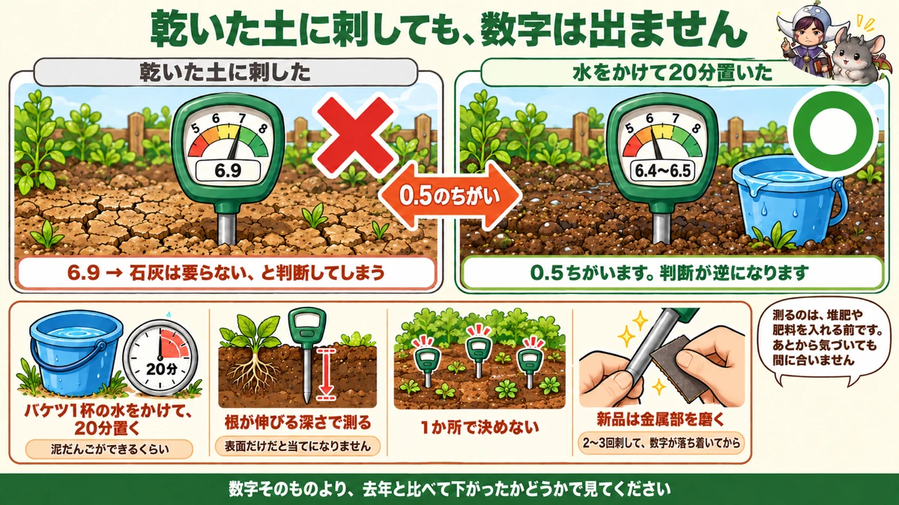

土の酸度と石灰の使い方｜苦土石灰・消石灰・有機石灰の違い、まく量と待つ日数、酸度計の測り方

どうも、8150（えいこう）です🌱 家庭菜園歴8年、理科の教員免許を持っていて、有機・無農薬で野菜を育てています。
📖 この記事の目次
この記事で分かること
- 畑の土は、野菜を育て続けたり、雨にさらされたりするうちに、少しずつ酸性に傾いていく、と説明されます。
- 土が酸性に傾きすぎると、根が出にくくなり、水や養分をうまく吸えなくなります。
- 石灰には、主に消石灰・苦土石灰・有機石灰（かき殻石灰など）の3種類があります。効き目の強さと、まいてから植えるまで待つ日数が違います。
- 石灰は「とりあえず毎回まく」ものではありません。まず土の酸度を測ってから、必要な分だけ入れます。入れすぎると、元に戻すのが大変です。
- 酸度計は、乾いた土ではうまく測れません。土に水分があるときに、同じ条件で測ります。
- ちょうどよい酸度は、野菜によって違います。ほうれん草は酸性が苦手、じゃがいもは酸性寄りでも育つ、などです。
畑の準備をするとき、「とりあえず苦土石灰をまいておく」という方は多いと思います。ホームセンターでも、肥料のとなりに石灰の袋が並んでいますよね。種まきの本やタネの袋にも、よく「石灰をまいて耕す」と書いてありますよね。
でも、そもそも石灰はなぜまくのでしょうか。入れなかったら、何が困るのでしょうか。毎回まく必要はあるのでしょうか。どれくらいまけばいいのでしょうか。
この記事では、土の酸度と石灰について、なぜ土が酸性に傾くのかというしくみから、石灰の種類と使い方、酸度計での測り方まで、順番に書いていきます。説明が分かれているところは、両方の考え方を並べておきますね。石灰の使い方は、本や動画によって言うことがかなり違う分野です。

早見：土の酸度と石灰の基本（ひと目で分かる目安）
酸度（pH）の目安
- pH7が中性。7より小さいと酸性、大きいとアルカリ性
- 多くの野菜が育ちやすいのは、pH5.5〜6.5くらい、という説明がある
- ほうれん草：酸性が苦手。pH6.0〜7.0、または6.5〜7.5という説明
- 玉ねぎ：pH6.0〜6.5という説明
- じゃがいも：酸性寄りでも育つ。pH5.0〜5.5を目安にする説明と、6.5でも育つという説明
石灰の種類
- 消石灰：効き目がいちばん強く、速い。入れすぎに注意。まいてから植えるまで、しばらく待つ
- 苦土石灰：カルシウムに加えて、マグネシウム（苦土）も入っている。使いやすい
- 有機石灰（かき殻石灰など）：効き目がいちばんおだやかで、ゆっくり。まいてすぐ植えられる、という説明が多い
まいてから植えるまでの目安
- 消石灰：2週間〜1か月くらい
- 苦土石灰：1〜2週間くらい
- 有機石灰：直前でもよい、という説明が多い（植えつけ10日前くらい、という袋の説明もある）
なぜ、畑の土は酸性に傾くのか
雨が、カルシウムとマグネシウムを流していく
日本は雨が多い国です。土の中のカルシウムやマグネシウムは、水に流されやすい性質がある、と説明されます。
カルシウムとマグネシウムは、土をアルカリ性の方向に保つ成分です。雨でこれらが流されていくと、土はだんだん酸性に傾いていく、というわけです。さらに、雨そのものも、酸性寄りのことが多い、と説明されます。
野菜を育て続けると、酸性に傾く
野菜を育て続けていると、土は少しずつ酸性に傾いていく、とも説明されます。根から出るものや、雨の影響が重なっていく、という考え方です。
また、化成肥料を使うと、土が酸性に傾きやすくなるので、石灰と一緒に使う必要がある、という説明もあります。
ただし、すべての畑が同じではない
ただし、「日本の土は必ず毎年酸性になる」と言い切れるわけではありません。石灰を入れるかどうかは、考え方がいろいろあって断定できない、有機の資材で育てていて、酸度をほとんど気にせずうまくいっている人もいる、と話す人もいます。
もともと酸性に傾きにくい土の畑で、強い酸性になった経験があまりない、という話もあります。だからこそ、まずは自分の畑の酸度を測ってみることが大切なんです。
酸性に傾きすぎると、何が困るのか
土が酸性に傾きすぎると、根が出にくくなる、と説明されます。根の量が少なくなると、水や養分をうまく吸えなくなり、育ちが悪くなって、収穫量も減ってしまいます。
また、酸性の土では、土の中の鉄やアルミニウムなどの金属の成分が溶け出してくる、とも説明されます。
酸性の土を好む病原菌もいる、という説明もあります。ただし、石灰そのものに病気を殺す力があるわけではなく、酸度を整えることで、間接的に病原菌を減らす手助けになっているのではないか、という慎重な言い方がされています。

3種類の石灰、それぞれの役目
消石灰：いちばん強く、速い
消石灰は、石灰の中でいちばん効き目が強い、と説明されます。アルカリ分（土をアルカリ性に向ける力の目安）が、製品によって60〜75%ほどと表示されている例があります。
反応がとても速く、強いので、入れすぎには注意が必要です。土がかなり酸性に傾いているときに向いています。まいてから、しばらく時間を置いてから植える必要があります。
苦土石灰：カルシウムとマグネシウム
苦土石灰は、カルシウムに加えて、マグネシウム（苦土）が入っている石灰です。マグネシウムも、野菜にとって大切な栄養分のひとつです。
効き目は消石灰より弱めで、使いやすいので、家庭菜園ではよくすすめられます。苦土石灰だけで、カルシウムとマグネシウムの両方を補えるのがよいところ、と説明されます。
有機石灰：おだやかで、ゆっくり
有機石灰は、かき殻や貝殻、卵の殻などから作られる石灰です。アルカリ分は40%台と表示されている例があり、効き目はゆっくり、おだやかです。
効き目が弱いぶん、入れすぎによる失敗が起きにくい、と説明されます。いろいろな微量の栄養分も含まれています。じわじわと酸度が変わっていくので、急いで酸度を直したいときには向きませんが、ふだんから使っている畑に向いている、という考え方です。
卵の殻を砕いて使うのも、有機石灰と同じようなイメージで考えてよい、という説明があります。ただし、殻が粗いと効くまでに時間がかかります。
石膏は、別の種類のカルシウム資材
石膏（硫酸カルシウム）も、カルシウムを補う資材として紹介されることがあります。ただし、石膏は土の酸度を整える石灰とは、役目が違う資材です。カルシウムを補いたいのか、酸度を整えたいのかで、使い分けます。
鶏ふんにも、石灰が含まれている
鶏ふんにも、石灰分が含まれている、と説明されます。含まれる量は、鶏のえさや飼い方で変わり、15%くらいという説明や、20〜30%くらいという説明があります。鶏ふんそのもののpHは8〜9くらいで、アルカリ性寄りだ、という説明もあります。
鶏ふんと石灰を一緒にたくさん使っていると、気づかないうちに土がアルカリ性に傾きすぎてしまうことがあります。土のpHが高くなりすぎると、マンガンや鉄、亜鉛、ホウ素などの栄養分が吸収されにくくなり、それらが足りない症状が出る危険がある、と説明されます。鶏ふんをたくさん使っている畑では、石灰を入れすぎていないか気をつけましょう。
石灰の使い方の手順
手順1：まず、酸度を測る
石灰を使うかどうかを決めるには、まず土の酸度を測る必要がある、と説明されます。
測ってpHが7.0ちょうど（中性）なら、苦土石灰を入れて酸度を調整する必要はありません。長いあいだ野菜を育てていて、pHが5.5や5くらいまで下がっているなら、苦土石灰を入れて調整します。
手順2：育てる野菜に合う酸度を確かめる
多くの野菜は、pH5.5〜6.5くらいでよく育つ、と説明されます。ただし、野菜によって、ちょうどよい酸度は違います（あとでくわしく書きます）。育てる野菜に合わせて、どこまで調整するかを決めます。
手順3：石灰の種類を選ぶ
- かなり酸性に傾いていて、時間に余裕がある：消石灰
- ふつうに調整したい：苦土石灰
- すぐにタネをまきたい、ふだんの補給：有機石灰
手順4：量を決める
苦土石灰なら、pHを1.0上げるのに、1平方メートルあたり100gくらいが目安、という説明があります。同じくらい上げるのに、消石灰なら80〜90g、有機石灰なら130gくらい、という説明です。
ただし、量の目安は説明によってかなり違います（あとで書きます）。正確に知りたいなら、土壌分析をしないと分からない、とも説明されます。目安の量より少なめから始めて、測りながら調整するのが安心です。
よく「1平方メートルあたり一握り」と言われることがあります。実際に自分の一握りの重さを量ってみたら、だいたい100gだった、という例があります。手の大きさで量は変わるので、一度キッチンばかりで、自分の一握りが何gか量っておくと便利です。
手順5：まいて、土とよく混ぜる
石灰をまいたら、土とよく混ぜます。表面にまいただけでは、効きにくくなります。
手順6：肥料は、石灰のあとに
石灰と肥料を入れる順番は、説明が分かれています（あとで書きます）。苦土石灰を先に入れて、1週間ほどたってから肥料を入れる、という手順がよく紹介されます。
手順7：植えるまで待つ
石灰の種類によって、まいてから植えるまでに待つ日数が違います。
- 消石灰：2週間〜1か月くらい
- 苦土石灰：1〜2週間くらい
- 有機石灰：直前でもよい、という説明が多い
待つ日数も、説明によって違います（あとで書きます）。
手順8：毎回の記録をつける
いつ、どの石灰を、どれだけまいたかを、メモしておきましょう。次に測ったときの酸度と見比べると、自分の畑でどれくらい効くのかが分かってきます。

石灰の入れすぎに気をつける
入れすぎると、元に戻すのが大変
石灰は、入れすぎると、土がアルカリ性に傾きすぎてしまいます。酸性の土に石灰を入れて酸度を上げるのは比較的かんたんですが、アルカリ性に傾いた土を酸性の方向に戻すのは、そう簡単ではない、と説明されます。
石灰類は、1平方メートルあたり300gくらいまでに抑えて、あまりやりすぎないように、という説明もあります。やりすぎると、土の中の栄養のバランスがくずれてしまうからです。
もともと酸性でない土に入れ続けると
もともと酸性に傾いていない土に、毎回石灰を入れ続けると、カルシウムがたまってアルカリ性に傾いていく、と説明されます。「石灰はとりあえずまくもの」と考えていると、知らないうちに入れすぎになっていることがあります。
アルカリ性に傾いた土を戻すには
アルカリ性に傾いた土を酸性の方向に戻すには、ピートモス（水ごけなどが積もってできた酸性の資材）を入れる方法が紹介されています。じゃがいもを育てる場所で、1平方メートルあたり約10リットルのピートモスを、表面から10〜15cmくらいの深さまで混ぜる、という例があります。ただし、pHはそう簡単には下がらない、とも説明されます。
じゃがいもと、そうか病
じゃがいもは、アルカリ性に傾いた土で育てると、いもの皮がかさぶたのようになる「そうか病」が出やすくなる、と説明されます。じゃがいもを植える場所には石灰を入れない、という説明もあります。
一方で、酸度を測って低すぎる場合は、じゃがいもの畑にも苦土石灰を入れる、という説明もあります。じゃがいもを植える場所の酸度を調整するなら、早めに、1か月くらい前までに済ませておく、という説明があります。

酸度計がないときの手がかり
スギナが多い場所は要注意
スギナがたくさん生えている場所は、酸性に傾いていることがある、と説明されます。
葉が黄色くなる
ほうれん草など、酸性が苦手な野菜は、酸性の土だと葉が黄色くなってしまうことがある、と説明されます。ただし、葉が黄色くなる原因には、肥料の不足や水はけの悪さもあるので、それだけで酸性と決めつけないようにしましょう。
ミミズがいるか
土があまりにも酸性に傾いていると、ミミズもいづらくなる、という話もあります。生きものを見るのも、ひとつの目安になるかもしれない、という言い方です。
手がかりは、あくまで目安
雑草や生きもの、葉の色は、あくまで手がかりです。それだけで、pHの数字までは分かりません。確かめたいときは、酸度計や、市販の測定キットを使って測るのがいちばんです。

酸度計の正しい測り方
乾いた土では、正しく測れない
土に差しこむタイプの酸度計は、土の水分が少ないと、正確に測れない、と説明されます。説明書にも、泥だんごが作れるくらいの水分が必要、と書いてあることがあります。
乾き気味の場所で測ったら6.9だったのに、同じ場所に水をやって20分ほど置いてから測り直したら、6.4〜6.5くらいになった、という例があります。水分の条件によって、数字がかなり変わるんですね。
差しこむタイプの測り方
- 測りたい場所を、直径10〜15cmくらい掘る
- 土が乾いていれば、水を加えて湿らせる
- 酸度計を垂直に10cmほど差しこむ
- ぐらぐら動かさず、土とぴったり密着させる
- しばらく置いて、数字を読む
数字が出るまでの時間は、機種によって違います。説明書の時間を守ってください。
液に溶かすタイプの測り方
土を少量取って、精製水を加えて混ぜ、その液を測るタイプの測定器もあります。玉ねぎを植える場所で、10cmくらいの深さの土を約10g取り、精製水を加えて測る、という例があります。
同じ酸度計、同じ条件で比べる
酸度計は、機械によって誤差があります。比べるときは、同じ酸度計を使い、水分などの条件をそろえて測ることが大切だ、と説明されます。バケツなどで一定の量の水をやってから測ると、条件がそろいやすくなります。
いちばん確かなのは、土壌分析
いちばん確実なのは、土壌分析をすることだ、と説明されます。土壌分析をすると、酸度だけでなく、カルシウムやマグネシウムなどがどれくらいあるかも分かるので、どれだけ入れればよいかが分かります。
土を測った数字を、畑の地図に書いておく
酸度を測ったら、畝ごとに数字を書きこんだ簡単な畑の地図を作っておくと便利です。同じ畑の中でも、場所によって酸度が違うことがあります。水がたまりやすい場所、日当たりのよい場所、前に何を育てたかで、土の状態は変わります。
毎年同じ時期に、同じ場所を測って書き足していくと、自分の畑の土がどう変わっていくのかが見えてきます。石灰を入れるかどうか、どの種類をどれくらい入れるかを決めるときの、いちばん確かな手がかりになります。
野菜ごとの、ちょうどよい酸度
ほうれん草
ほうれん草は、酸性の土を嫌う野菜です。ちょうどよい酸度は、pH6.0〜7.0という説明と、6.5〜7.5という説明があります。これより酸性に傾いていると、育ちが悪くなっていきます。
玉ねぎ
玉ねぎに合う酸度は、pH6.0〜6.5という説明があります。一方で、測ったらpH7.1で、ちょうど中性くらいなので問題ない、とする例もあります。
にんにく
にんにくは、pH5.5〜6.5、またはpH6.0くらいが合う、という説明があります。pH6.5なら問題ない、という例もあります。
じゃがいも
じゃがいもは、酸性寄りでも育つ野菜です。pH5.0〜5.5くらいを目安にする説明と、6.5でもほぼ問題ないという説明があります。アルカリ性に傾くと、そうか病が出やすくなります。
野菜ごとの石灰の使いどころ
ほうれん草：石灰がいちばん効く野菜
ほうれん草は、石灰がとても大好きな野菜だ、と説明されます。ほうれん草を育てていて、育ってきたのに葉が黄色くなって元気がなくなり、気づいたら枯れていた、という失敗は、石灰が足りていないことが多い、という説明です。ほうれん草の畑は、ほかの野菜より、酸度の確認をしっかりしておきましょう。
酸性の土にそのままタネをまいてしまった場合のリカバリーとして、苦土石灰を溶かした水をやってみた、という実験も紹介されています。話している人自身も「育ちがよかったように感じる」という言い方にとどめているので、確実な方法とは言えませんが、ひとつの試みとして覚えておくとよいと思います。
じゃがいも：測ってから決める
秋じゃがいもの畑を測って、pH6.5ならほぼちょうどよい、とする例があります。7を超えるようならピートモスで酸度を下げ、5.5を下回るようなら苦土石灰でアルカリ性の方向に傾ける、という考え方です。じゃがいもは、石灰を入れすぎないことがいちばん大切です。
落花生：あとから追肥と一緒に
落花生は、タネをまく前に石灰を入れず、1回目の追肥のときに、ぼかし肥料と一緒に石灰をまいて土寄せする、という例があります。タネをまく前に、苦土石灰や有機石灰を畑全体にまいておいてもよいけれど、あとからまく場合は、苦土石灰ではなく、効き目のおだやかな有機石灰をすすめる、という説明です。
ねぎ：白絹病の予防にも
ねぎの白絹病（株元に白いカビが出る病気）は、酸性の土で出やすく、中性やアルカリ性では発生が抑えられる、と説明されます。そのため、植える前や植えるときに、石灰で酸度を整えておく、という方法が紹介されています。
トマト：カルシウムが実に届くように
トマトの実のお尻が黒くなる症状は、カルシウムの不足が原因のひとつとされます。土づくりのときにまく石灰には、カルシウムがたくさん含まれています。ただし、石灰をまいていても、葉が茂りすぎていると、カルシウムが葉のほうに回ってしまい、実まで届きにくくなることがある、と説明されます。水やりと、わき芽かきで葉を整理することも大切です。
石灰を使った液を作る人もいる
酢やクエン酸で溶かして使う
石灰は、土に混ぜて使うのが基本ですが、有機石灰を酢と反応させて液を作り、薄めて使う、という方法を紹介する人もいます。
たとえば、卵の殻やかき殻などの有機石灰と苦土石灰を、酢やクエン酸と合わせて液を作り、上澄みを500〜1000倍くらいに薄めて使う、という例があります。苦土石灰のマグネシウム分は水には溶けにくいので、クエン酸を加えて溶かす、という説明です。
ただし、こうした液は、作り方や濃さが人によってまちまちで、効き目を確かめた比べ方が示されているわけではありません。また、アルカリが強いので、じゃがいもには向かない、という注意もあります。試すなら、ごく薄いものから、少しの株で試してください。
石灰窒素は、別の資材
名前に「石灰」がつく資材に、石灰窒素があります。石灰窒素は、名前のとおり窒素の肥料でもあり、土づくりに使われます。1平方メートルあたり50〜100gを目安に、苦土石灰などと一緒に混ぜこむ例があります。ふつうの石灰とは使い方や注意点が違う資材なので、使うときは袋の説明をよく読んでください。
失敗の見分け方
石灰をまいたのに、ほうれん草の葉が黄色い
酸度以外の原因（肥料不足、水はけの悪さなど）の可能性があります。まず酸度を測ってみて、適正の範囲に入っているなら、ほかの原因を探してください。
じゃがいもの皮が、かさぶたのようになった
土がアルカリ性に傾いていて、そうか病が出た可能性があります。次にじゃがいもを植える場所には、石灰を入れないようにし、酸度を測ってみてください。
酸度計の数字が、測るたびに違う
土の水分や、差しこみ方の違いで、数字が変わっている可能性があります。水分をそろえて、同じ場所で、同じやり方で測り直してください。
毎年石灰を入れていたら、育ちが悪くなってきた
石灰の入れすぎで、土がアルカリ性に傾いている可能性があります。しばらく石灰を入れるのをやめて、酸度を測ってみてください。
説明が分かれていること
石灰と肥料を一緒に入れてよいか
- 苦土石灰や有機石灰は、肥料と同時に入れて混ぜてもよい。ただし消石灰は不可、という説明
- 苦土石灰も、肥料より先に入れて、時間を置いてから肥料を入れる、という説明
- 有機石灰も、土に混ぜたあと、肥料はあとから入れる、という実演
石灰の種類や、待つ目的によって考え方が違います。迷ったら、石灰を先に入れて、少し時間を置いてから肥料を入れるほうが無難です。
植えるまで、何日待つか
- 消石灰は2週間〜1か月、苦土石灰は1〜2週間、という説明
- 消石灰は2週間、苦土石灰は1週間程度、有機石灰は直前でもよい、という説明
- 苦土石灰をまいて、その日のうちに植えても大丈夫、という説明と実践
- 有機石灰でも、植えつけの10日前くらいにまくとよい、という袋の説明
時間に余裕があるなら待つ、急ぐなら有機石灰を使う、と考えるのが分かりやすいと思います。
また、消石灰や苦土石灰は肥料を入れる2週間くらい前にまいておき、肥料と同じタイミングでは入れないようにする、有機石灰はゆっくり効くので肥料と同時に入れても大丈夫、という説明もあります。石灰の種類で待ち方を変える、という考え方です。
どれくらい入れればpHが上がるか
- 苦土石灰で、pH1.0上げるのに1平方メートルあたり100g、という説明
- 苦土石灰で、pH1.0上げるのに1平方メートルあたり200g、という説明
- pH0.5上げるのに、1平方メートルあたり100〜200g、という説明
もとの土の性質や、耕す深さ、製品の違いで変わります。目安の量を平均して使うのではなく、少なめに入れて測る、をくり返すのが安心です。
石灰は毎年入れるものか
- 毎年補給していく、という考え方
- 有機の資材にカルシウムが含まれているので、石灰なしでも育つ場合がある、という考え方
- もともと酸性に傾きにくい土の畑では、あまり必要ない、という経験
どの畑にも同じルールは当てはまりません。測ってから決めるのが、いちばん確かです。
石灰に、病気を防ぐ力はあるか
- 消石灰はまくと熱を出して、消毒のような効果が期待できる、という説明
- 石灰そのものに殺菌の効果はないが、間接的に病原菌を減らすのに役立っているのでは、という慎重な説明
石灰を「消毒薬」として使うのではなく、酸度を整える資材として使う、と考えておきましょう。
石灰を、野菜の上からまくか
- 玉ねぎのべと病など、カビの仲間が原因の病気の対策に、有機石灰を葉の上からまく、という例。葉の表面がアルカリ性になって、カビの増殖が抑えられる。ただし、細菌やウイルスが原因の病気には直接の効果はない、という説明
- 石灰の粉を野菜の葉に直接かける方法は、すすめない、という説明
土に混ぜる使い方と、葉にまく使い方は、まったく別の使い方です。葉にまく場合も、病気を治す薬ではなく、予防のひとつの工夫として考えてください。
よくある質問
Q. 石灰は、毎回植える前にまかないといけませんか？
A. いいえ。まず酸度を測って、必要なときだけ入れます。酸度がちょうどよいのに入れ続けると、アルカリ性に傾きすぎてしまうことがあります。
Q. 苦土石灰をまいた次の日に、タネをまいてしまいました
A. 苦土石灰はまいて1〜2週間待つ、と説明されることが多いですが、その日のうちにまいても大丈夫、という説明や実践もあります。ほうれん草で、苦土石灰を溶かした水を使って育ちを助ける実験をした例もあります。芽が出るかどうか、様子を見てみてください。
Q. 有機石灰なら、いくら入れても大丈夫ですか？
A. 有機石灰は効き目がおだやかで、入れすぎの失敗は起きにくいと説明されますが、無制限に入れてよいわけではありません。卵の殻なども同じです。測りながら使ってください。
Q. 酸度計は、どんなものを買えばいいですか？
A. 土に差しこむタイプと、土を水に溶かして測るタイプがあります。差しこむタイプは手軽ですが、水分の条件で数字が変わりやすいので、説明書どおりに使うことが大切です。いずれにしても、同じ機器で、同じ条件で測り比べるのがポイントです。
Q. 石灰を入れるのに、いちばんよい季節は？
A. 植える時期から逆算して、待つ日数がとれるタイミングで入れます。冬の寒起こしのあとや、春・秋の植えつけの2週間〜1か月前に、土づくりと合わせて行うことが多いです。
Q. プランターの土にも、石灰はいりますか？
A. 市販の野菜用の培養土は、酸度が調整されていることが多いです。新しい培養土なら、まずは入れずに使ってみてください。古い土を使い回す場合は、酸度を測ってから考えましょう。
Q. 苦土石灰と消石灰、どちらがおすすめですか？
A. 家庭菜園なら、効き目がおだやかで、マグネシウムも補える苦土石灰が使いやすい、と説明されます。消石灰は効き目が強いぶん、入れすぎの失敗が起きやすいので、かなり酸性に傾いた土を直すときに使う、と考えるとよいと思います。
Q. 石灰を野菜に直接ふりかけてもいいですか？
A. 説明が分かれています（「説明が分かれていること」に書きました）。玉ねぎの病気対策に上からまく例もありますが、粉を葉に直接かける方法はすすめない、という説明もあります。迷ったら、石灰は土に混ぜて使うもの、と考えておくのが無難です。
Q. 石灰をまいたあと、雨が降ってしまいました
A. 石灰を土によく混ぜてあれば、大きな問題にはなりにくいと考えられます。ただし、表面にまいただけで強い雨が降ると、流されてしまうことがあります。石灰は、まいたらすぐに土と混ぜておくのが基本です。
Q. 石灰は、どれくらいの深さまで混ぜればいいですか？
A. 野菜の根が広がる深さまで、よく混ぜておくのが基本です。表面だけに石灰が集まっていると、そこだけ酸度が変わって、根のまわりは変わらない、ということになります。くわやスコップで、土全体になじむように混ぜてください。
Q. 去年石灰を入れたので、今年は入れなくていいですか？
A. 測ってみないと分かりません。雨の多さや、育てた野菜、使った肥料によって、酸度の変わり方は違います。植えつけの前に測って、ちょうどよい範囲に入っていれば、入れなくて大丈夫です。
学ぶ🔬 pHという数字の正体
ここからは、pHのしくみについて、少しだけ深く書いておきます。読み飛ばしても大丈夫です。
pHは、酸性・アルカリ性のものさし
pH（ペーハー、ピーエイチ）は、ものが酸性かアルカリ性かを表すものさしです。「水素イオン指数」とも呼ばれます。
ものさしの目盛りは0から14まであり、7が中性です。7より小さいほど酸性が強く、7より大きいほどアルカリ性が強くなります。レモン汁や酢は酸性、石けん水はアルカリ性です。
1違うと、10倍違う
pHの数字は、ふつうのものさしとは少し違います。pHが1違うと、酸の強さは約10倍違う、というしくみになっています。たとえば、pH5の土は、pH6の土より、約10倍酸性が強い、ということです。
だから、pHを0.5や1変えるのは、数字で見るより大きな変化なんです。石灰を少しずつ入れて、測りながら調整するのが大切だと言われるのは、このためでもあります。
石灰は、酸を打ち消す
石灰に含まれるカルシウムやマグネシウムは、土の中の酸を打ち消す（中和する）働きをします。酸性に傾いた土に石灰を入れると、酸が打ち消されて、pHが中性の方向に戻っていきます。
消石灰は水に溶けやすく、すぐに中和が進むので、効き目が速い、と説明されます。有機石灰（かき殻など）は、ゆっくり溶けていくので、効き目もゆっくりになります。
なぜ、酸性だと根が育ちにくいのか
土が酸性に傾くと、ふだんは土の中で固まっているアルミニウムなどの金属の成分が、溶け出しやすくなります。こうした成分が根を傷めて、根が伸びにくくなる、と考えられています。
根が育たないと、水や養分を吸う力が落ちて、野菜全体の育ちが悪くなります。酸度を整えるのは、野菜に栄養を与えるためというより、根が元気に働ける環境を作るため、と考えると分かりやすいと思います。
カルシウムは、細胞の壁を作る
カルシウムは、植物の細胞を包む「細胞壁」を作るのに必要な成分だ、と説明されます。細胞壁がしっかりすると、植物の体が丈夫になります。
カルシウムは、根から吸った水と一緒に、植物の体の中を運ばれていきます。水がたくさん運ばれていく先、つまり、葉がたくさんあるところへ多く届きます。そのため、葉が茂りすぎていたり、水が足りなかったりすると、実のほうにはカルシウムが届きにくくなります。トマトで、石灰をまいているのにカルシウム不足の症状が出ることがあるのは、このためなんですね。
マグネシウムは、葉の緑の中心
苦土石灰に入っているマグネシウム（苦土）は、葉の緑色のもとである葉緑素の、ちょうど中心にある成分です。葉緑素は、光を受けて栄養を作る、光合成の主役です。
マグネシウムが足りなくなると、葉緑素がうまく作れず、古い葉から黄色くなっていくことがあります。苦土石灰が家庭菜園でよくすすめられるのは、酸度を整えながら、この大事なマグネシウムも一緒に補えるからなんですね。
まとめ
ここまで読んでくださって、ありがとうございます！
土の酸度と石灰のポイントを、もう一度まとめておきます。
- 畑の土は、雨や栽培で少しずつ酸性に傾くことがある。ただし畑によって違う
- 酸性に傾きすぎると、根が出にくくなり、育ちが悪くなる
- 石灰は、消石灰（強い・速い）、苦土石灰（使いやすい・マグネシウム入り）、有機石灰（おだやか・ゆっくり）
- まず酸度を測って、必要なときだけ入れる
- 量の目安は説明によって違う。少なめに入れて、測りながら調整
- 入れすぎると、元に戻すのが大変。じゃがいもはそうか病に注意
- 酸度計は、土が湿った状態で、同じ条件で測る
- ちょうどよい酸度は、野菜によって違う
石灰は「とりあえずまくもの」ではなく、「測ってから、必要な分だけ入れるもの」です。測る習慣がつくと、石灰の入れすぎも、入れ忘れも防げます。酸度計は、一度買えば何年も使える道具です。
まずは、次に野菜を植える予定の畝で、土の酸度を一度測ってみてください。数字が分かるだけで、石灰の使い方がぐっと分かりやすくなります🧪
貝殻石灰（有機石灰）
まいたその日にタネをまけます。秋の日程が詰まったときはこれ一択です。
![[商品価格に関しましては、リンクが作成された時点と現時点で情報が変更されている場合がございます。]](https://hbb.afl.rakuten.co.jp/hgb/56d21b6a.c19127f6.56d21b6b.c5473e84/?me_id=1258048&item_id=10000067&pc=https%3A%2F%2Fthumbnail.image.rakuten.co.jp%2F%400_mall%2Fkaneashop%2Fcabinet%2F12084383%2F12419790%2Fimgrc0108924525.jpg%3F_ex%3D240x240&s=240x240&t=picttext "[商品価格に関しましては、リンクが作成された時点と現時点で情報が変更されている場合がございます。]")

苦土石灰
マグネシウムも補えます。ただし、まいてから2週間あけてください。
![[商品価格に関しましては、リンクが作成された時点と現時点で情報が変更されている場合がございます。]](https://hbb.afl.rakuten.co.jp/hgb/55e75fe5.20db4cd1.55e75fe7.d1ec32cc/?me_id=1194164&item_id=10000709&pc=https%3A%2F%2Fthumbnail.image.rakuten.co.jp%2F%400_mall%2Fgardening%2Fcabinet%2Fikou_20091001_001%2Fimg1043676078.jpg%3F_ex%3D240x240&s=240x240&t=picttext "[商品価格に関しましては、リンクが作成された時点と現時点で情報が変更されている場合がございます。]")
ほうれん草のタネ
ほうれん草だけは例外で、毎年きちんと石灰を入れるうねが要ります。
![[商品価格に関しましては、リンクが作成された時点と現時点で情報が変更されている場合がございます。]](https://hbb.afl.rakuten.co.jp/hgb/56d218b8.a80573a6.56d218b9.1d398fba/?me_id=1241438&item_id=10032053&pc=https%3A%2F%2Fthumbnail.image.rakuten.co.jp%2F%400_mall%2Fnogyoya%2Fcabinet%2Fcube7%2F2246239_2.jpg%3F_ex%3D240x240&s=240x240&t=picttext "[商品価格に関しましては、リンクが作成された時点と現時点で情報が変更されている場合がございます。]")
備中鍬
石灰は表面に置いても効きません。必ず耕して土と混ぜてください。
![[商品価格に関しましては、リンクが作成された時点と現時点で情報が変更されている場合がございます。]](https://hbb.afl.rakuten.co.jp/hgb/56d752c3.3ce6fd3b.56d752c4.f8896826/?me_id=1209220&item_id=10002030&pc=https%3A%2F%2Fthumbnail.image.rakuten.co.jp%2F%400_mall%2Fhonmamon-r%2Fcabinet%2Fimg3%2Fw4580149745643.jpg%3F_ex%3D240x240&s=240x240&t=picttext "[商品価格に関しましては、リンクが作成された時点と現時点で情報が変更されている場合がございます。]")